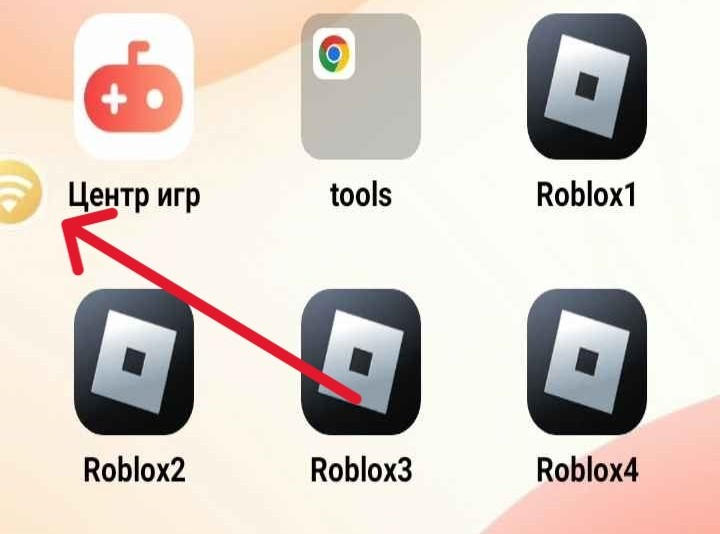

Инструкция по установке и настройке клонов
Шаг 1. Установка
Для начала работы с клонами, необходимо скачать и установить их на устройство
Вы можете скачать их с этих дискорд серверов перейдя в раздел executors
Лимит клонов для UVIP - 2
Лимит клонов для GVIP - 3
Лимит клонов для SVIP - 10
Нам понадобятся следующие приложения:
После того как вы скачали и установили все необходимые приложения, вы можете перейти к следующему шагу.
Шаг 2. Настройка
Получаем root права на устройстве.
Нажимаем на значёк wifi в левой части экрана
В открывшемся окне выбираем "Управление корнем"
Включаем root, выбираем диапазон "Все приложения" и применяем настройки
Разблокировка настроек разработчика и получение разрешений для Floating Apps
Переходим в настройки
Заходим в раздел "О телефоне"

Спускаемся в самый низ и нажимаем 8 раз на "Номер сборки"
Возвращаемся в основное меню настроек и переходим в раздел "Система"
Открываем дополнительный список настроек и переходим в настройки разработчика
Включаем разрешения указанные на изображении
Настройка Floating Apps
Запускаем Floating Apps и переходим в настройки
В выпадающем списке выбираем "Все приложения"
Через поиск ищем Floating Apps и выбираем "Не экономить"
Шаг 3. Запуск
Авторизуйтесь в каждом клиенте роблокса
Закройте все приложения
Перезагрузите устройство
Нажмите на значёк Floating Apps в левом верхнем углу и запустите утилиту "Лаунчер"
В открывшемся меню введите в поиск "roblox" и запустите установленные клоны в нужном вам режиме